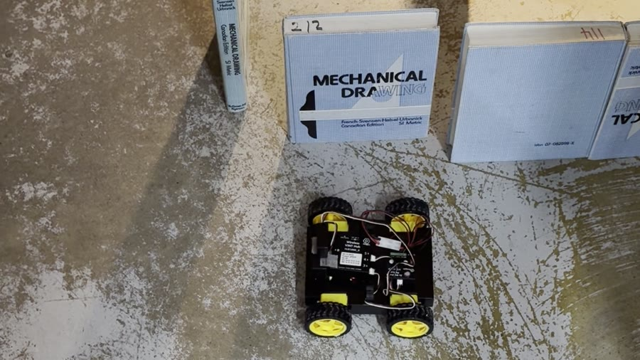
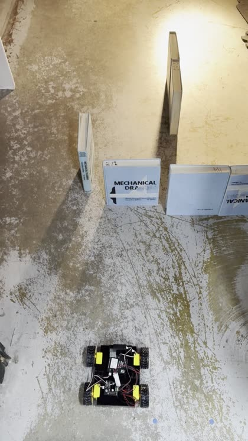
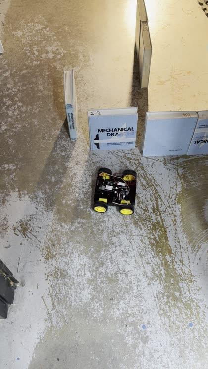
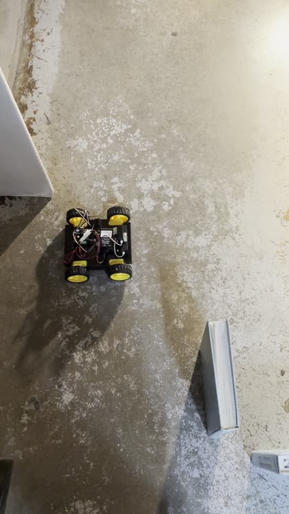
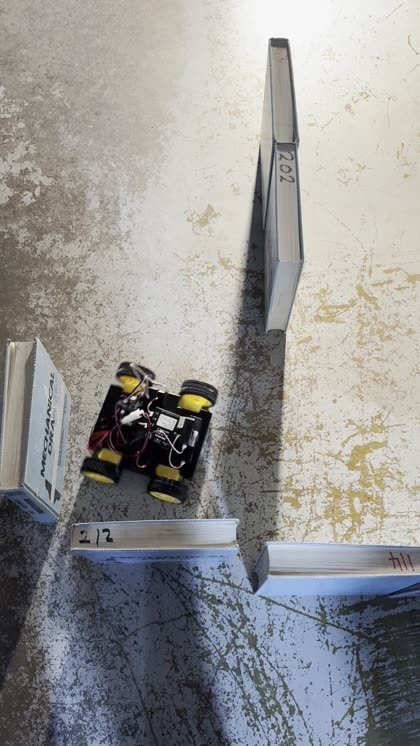
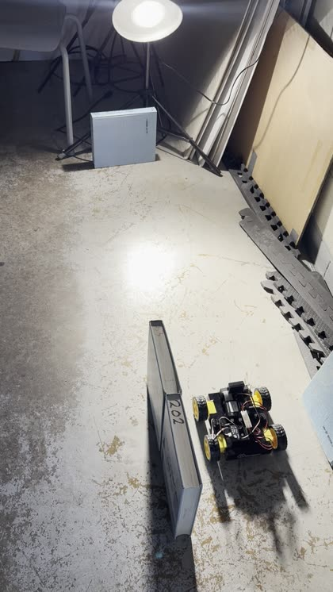
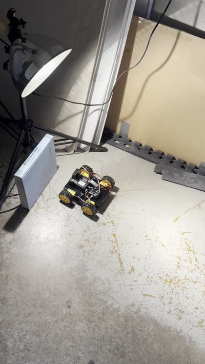

Autonomous Obstacle-Course Rover
A four-wheel rover I designed in CAD, 3D printed, wired and programmed, then ran through a six-stage course on timed moves, a sonar sensor and a light sensor.
Navigate a course with nothing but sensors and code
The assignment, Maze Navigator & Environment Logger, asked for a rover that finds its way on its own, uses sonar to avoid obstacles and a light sensor to read its environment, and records readings so the run can be analysed afterwards.
Hard-coded turns
Follows a timed sequence of drive and turn moves.
Sonar obstacle detection
Stops when something is closer than 200 mm and turns.
Speed recognition
Drives at a different speed for each part of the run.
Light sensing
Creeps toward the lamp and stops when the light level is high enough.
Precision turning
Turns calibrated by trial and error to land on the right heading.
Textbook push
Pushes a textbook clear of the finish line.


Drawn in CAD, printed flat, folded along designed bend lines
Everything the rover rides on was drawn in CAD, then made and finished by hand.
What I designed
- Main frame: the structure everything else attaches to, printed flat and folded along designed bend lines, with bays for the motors underneath.
- Battery and motor frame: holds the batteries and motors in place.
- Suspension: keeps the wheels in contact with the ground on uneven floor.
- Sensor mounts: position the sonar and light sensor for a clear field of view and clearance.
- Wireless-module mount: carries the piece that connects the rover to my computer's network.
Designing for bending
The frame is printed flat and folds along bend lines I added in CAD. I predicted where the weight of the batteries, motors and wheels would bend it and put the bend lines there. Once the rover was loaded, the parts bent at those lines.
From CAD to hardware
First printed in PLA; that frame bent too easily under load, so the final build uses PETG. None of the 15+ printed parts was usable straight off the printer: I cut, shaped and sanded each one before assembly.
The PLA frame bent under load and tilted the whole rover
The first frame was printed in PLA. With the batteries, motors and wheels fitted, it bent so easily that the rover tilted off balance. My teacher recommended PETG, and the reprinted frame bent less under the same load.
- Symptom: under the full load, the PLA frame bent and tilted the rover, shifting the balance of every component mounted on it.
- Why it matters: a tilted frame changes how the wheels meet the ground and where anything mounted on it points, which undermines timed moves and sensor readings.
- Evidence: I did not photograph the failure, so the model below is a schematic of it, exaggerated for clarity and not measured.
The frame sits flat and the weight of the battery, motors and wheels is shared. Choose PLA loaded to see what happened.
PLA
- Stress σ
- Energy absorbed
PETG
- Stress σ
- Energy absorbed
Drag the slider. PLA yields at 2.9% strain, PETG at 5.9%. The area under each curve is the energy absorbed per unit volume. Curve shapes are sketched between datasheet points.
Stress
Stress (σ) is load per unit area. In bending, σ = M·c / I. The weight of the batteries, motors and wheels created a bending moment that concentrated stress in the thin bend zones.
Strain
Strain (ε) is deformation per unit length. In the elastic range σ = E·ε and the part springs back. Past the elastic limit the strain no longer recovers.
Young's modulus
Young's modulus (E) is stiffness in the elastic range. Beam stiffness scales with E·I, and I = b·t³ / 12, so thin sections are extremely sensitive to thickness.
Yield and ductility
Yield strength marks where permanent (plastic) deformation starts. Ductility is the strain a material tolerates. Printed PLA yields at only about 3% strain.
Creep
Slow permanent deformation under constant load. PLA softens at about 55 to 60 °C (its glass transition), so warm batteries and motors can speed it up.
Why PETG
Printed PETG is not stiffer than PLA. The gain is in how it behaves once the bend zones are loaded: about twice the strain at yield, more energy absorbed before failure, and a higher glass transition.
| Property | PLA | PETG | What it means for the frame |
|---|---|---|---|
| Young's modulus, E | 2.2 GPa | 1.9 GPa | Elastic stiffness. PLA is slightly stiffer. |
| Tensile yield strength, σy | 51 MPa | 46 MPa | Similar strength, so not the deciding factor. |
| Strain at yield | 2.9% | 5.9% | How far it bends before it deforms permanently. |
| Glass transition, Tg | about 55–60 °C | about 77 °C | Creep resistance near warm batteries and motors. |
Typical datasheet values for printed specimens in the flat (XY) direction: Prusament PLA (ISO 527) and Ultimaker PETG (ASTM D3039). Test methods and printers differ, so compare the trends, not the decimals. The PLA sheet reports yield only, so its curve stops there.
Result
- Same geometry and bend lines, reprinted in PETG.
- Under the same load of batteries, motors and wheels, the PETG frame bent noticeably less and the rover's balance held.
- Final frame mass: 62 g.
If it needed more
- Thicker bend zones: stiffness scales with t³, so 50% more thickness gives about 3.4× the bending stiffness.
- Print orientation: PETG's layer-to-layer strength is about half its in-plane strength (19 against 38.5 MPa at break), so keep bends from peeling layers apart.
- Check first: estimate deflection with δ = F·L³ / (3·E·I) before printing.
A wireless hub ties the rover to my computer
The code runs on the computer and sends every command to the rover over the network. The sensors send their readings back the same way.
Phidgets DC motor controller
Left side on channel 0, right side on channel 1.
Four motors and wheels
Wired as a left pair and a right pair, so the rover turns by driving the two sides in opposite directions.
Sonar distance sensor
Reads distance in millimetres and sees obstacles ahead.
Light sensor
Reads light level in lux on hub port 3 and finds the lamp.
Wireless Phidgets hub
Connects every device to my computer's network.
Batteries
Mounted in the printed battery frame. Wiring between sensors, hub and controller is soldered.
Four versions, each building on the last
The control code is written in Java with the Phidget22 library. I started with a square driven by pure timing and added sensing one step at a time.
All six stages cleared, finishing with the textbook
The rover cleared all six stages on the demo run, finishing by pushing the textbook clear of the line.






What worked
- Building in layers: every version was a working rover before the next sensor went on.
- Calibrating turns by hand until the rover hit each corner.
- Smoothing the light signal so the stop point was consistent.
- Designing the mounts around the sensors, not the other way round.
- Putting bend lines where I predicted the frame would flex under the weight of the batteries, motors and wheels. It bent at those lines.
- Treating the tilting PLA frame as a materials problem and fixing it by moving to PETG.
What I'd change
- Replace timed turns with gyro or encoder feedback.
- Let the sonar choose the turn direction, not just the moment.
- Log every sensor reading and analyse the run afterwards, as the brief asks. The current code only prints readings to the screen.
Source code and the full demo video are available on request.